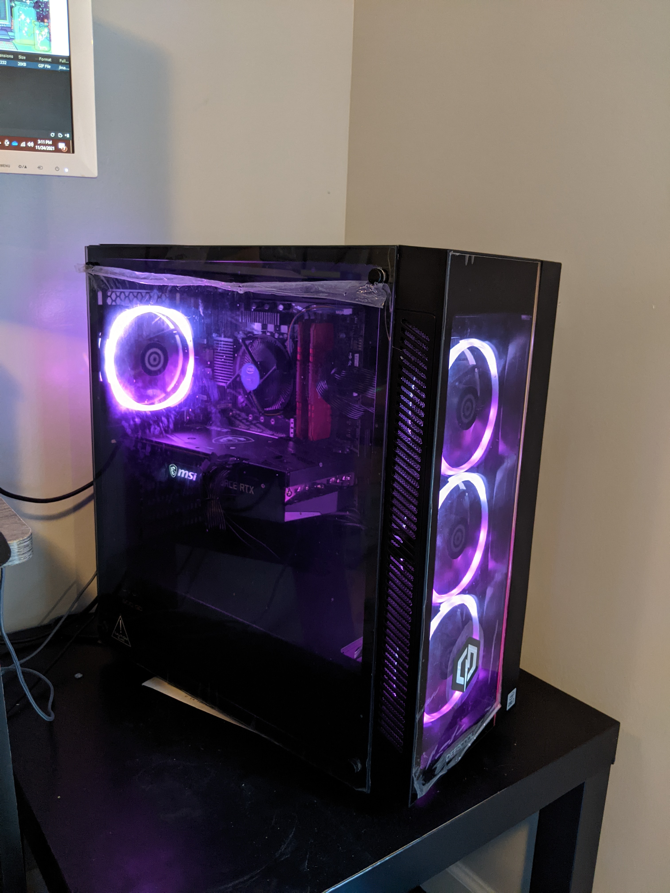
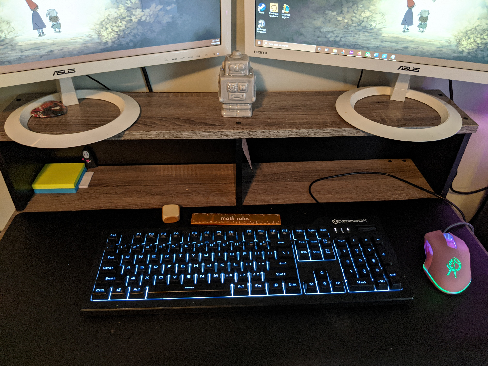
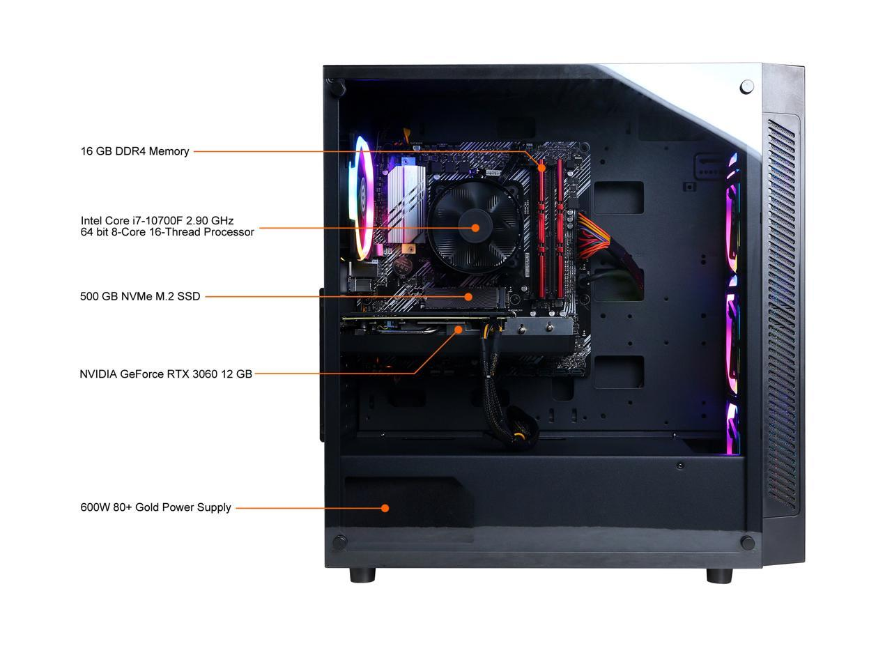

Video Games
Interactive software that is used for entertainment, role playing and simulation. Video games are played on a Windows PC, mobile device or specialized gaming consoles. More recently, the industry has expanded onto mobile gaming through smartphones and tablet computers, virtual and augmented reality systems, and remote cloud gaming.
PC Gaming
A gaming computer is a specialized personal computer designed for playing video games. Gaming PCs typically differ from mainstream personal computers by using high-performance video cards and high core-count central processing units with raw performance.
My Gaming PC:
  My Favorite Genre
RPG
In my opinion, role-playing games are some of the most significant and fun games ever made. In simple terms, a role-playing game (RPG) is a genre of video game where the gamer controls a fictional character (or characters) that undertakes a quest in an imaginary world. Traditional role-playing video games share five basic elements:
- The ability to improve your character over the course of the game by increasing his statistics or levels.
- A menu-based combat system with several choices of skills, spells, and active powers as well as an active inventory system with wearable equipment such as armors and weapons.
- A central quest that runs throughout the game as a storyline and additional (and usually optional) side quests.
- The ability to interact with elements of the environment or storyline through additional abilities (e.g. lockpicking, disarming traps, communication skills, etc.)
- The existence of certain character classes that define the characteristics, skills, abilities, and spells of a character (e.g. wizard, thief, warrior, etc.)
Modern and hybrid RPGs do not necessarily have all of these elements, but usually feature one or two in combination with elements from another genre.
History
Early Years
The first recognized example of a game machine was unveiled by Dr. Edward Uhler Condon at the New York World’s Fair in 1940. The game, based on the ancient mathematical game of Nim.
Decades later computer scientists began designing simple games and simulations on mainframe computers. Inspired by the sci-fi novels Russell and his friends enjoyed, these computers “hackers” at MIT decided to create a dueling game between two spaceships called “Spacewar”. Although Spacewar was fun to play, it was never destined for released to the general public, since computers were still too expensive for personal use.
In fact, video games did not get their true start from computer programmers, but from an engineer skilled in another major invention of the 20th century: the television set.
The “Brown Box” was a vacuum tube-circuit that could be connected to a television set and allowed two users to control cubes that chased each other on the screen. The “Brown Box” could be programmed to play a variety of games, including ping pong, checkers and four sports games.
Atari & Arcade Gaming
Sega and Taito were the first companies to pique the public’s interest in arcade gaming when they released the electro-mechanical games Periscope and Crown Special Soccer in 1966 and 1967.
Nolan Bushnell, the godfather of gaming, founded the first gaming company to really set the benchmark for a large-scale gaming community- known as Atari.
During the late 1970s, a number of chain restaurants around the U.S. started to install video games to capitalize on the hot new craze. At this point, gaming was popular with the younger generations, and was a shared activity in that people competed for high-scores in arcades. Technological advancements, such as Intel’s invention of the first microprocessor, led to the creation of Gunfight in 1975, the first example of a multiplayer human-to-human combat shooter. It came with a new style of gameplay, using one joystick to control movement and another for shooting direction — something that had never been seen before.
Home Gaming Becomes A Reality
In addition to gaming consoles becoming popular in public spaces in the U.S., the early 1970s also saw the advent of personal computers and mass-produced gaming consoles become a reality.
In 1977, Atari released the Atari VCS. It was only designed to play 10 simple challenge games, such as Pong. However, the console included an external ROM slot where game cartridges could be plugged in; the potential was quickly discovered by programmers around the world. The integration of a microprocessor in the Atari VCS led to the release of Space Invaders in 1980. The games was one of the forerunners of modern video gaming and helped expand the video game industry from a novelty to a global industry.
A major crash of the United States home video game market occurred in 1983 as the market was flooded by too many poor-quality games. The crash set the stage for Japan's video game industry to take leadership of the market. Nintendo released its Nintendo Entertainment System in the United States and other Western markets in 1985, helping to rebound the failing video games sector. The latter part of the 1980s and early 1990s saw video games driven by improvements and standardization in personal computers, and the console war competition between Nintendo and Sega as they fought for market share in the United States.
Microsoft entered the console hardware market in the early 2000s with its Xbox line, fearing that Sony's PlayStation positioned as both a game console and entertainment device would displace personal computers.
Personal Computers
In the early 1980s, new home computer systems were affordable for the average American , and were advertised as the “sensible” option for the whole family. These home computers had much more powerful processors than the previous generation of consoles; this opened the door to a new level of gaming, with more complex, less linear games. They also offered the technology needed for gamers to create their own games with BASIC code.
Early computers also paved the way for multiplayer gaming, a key milestone for the evolution of the gaming community.The real revolution in gaming came when LAN networks opened up multiplayer gaming, and the "LAN Party" was born. This key step set the stage for the large-scale interactive gaming that modern gamers currently enjoy.
Online Gaming On Consoles
Real advances in “online” gaming wouldn’t take place until the release of 4th generation 16-bit-era consoles in the early 1990s, after the Internet as we know it became part of the public domain in 1993. Although, none of them really took off due to slow Internet capabilities and problems with cable providers.
It wasn’t until the release of the Sega Dreamcast, the world’s first Internet-ready console, in 2000, that real advances were made in online gaming as we know it today. However, it also was a massive failure due to huge costs of maintaining PlanetWeb Browser, which effectively put an end to Sega’s console legacy. Regardless of its failure, Dreamcast paved the way for the next generation of consoles.
Microsoft released the Xbox in the mid-2000s, which made online functionality an integral part of the gaming industry.
Modern Gaming
In 2005 and 2006, Microsoft’s Xbox 360, Sony’s Playstation 3, and Nintendo’s Wii kicked off the modern age of high-definition gaming. Gaming graphics and hardware were increasing (in complexity) at an exponential rate. Valve releases the gaming digital distribution platform for PC gamers, known as Steam.
After the 00s, gaming was one of the globe’s biggest industries, evolving on a year by year basis. Graphics are now at an all-time high, providing gamers with new levels of realism that were never thought possible. PCs are now a home staple, with custom PC building being a huge industry across the globe. Competitive esports now drives millions of dollars every year, with professional franchises recruiting young, upcoming stars to their ever-growing game rosters.
As a gamer, we have never been more privileged. We have our pick of the litter: will it be the Xbox One, Nintendo Switch, PS5, PC, Mac, mobile, or the Wii U?
Sources:
How to Play Video Games
Finding Games
Choose a platform
- For the largest number of available games, get a desktop computer running the latest operating system, and install a good video card.
- For a cheap, easy to set up option, purchase a console. Choose a latest-generation console (PS4, Switch, or Xbox One) to play new games, or an old one (PS3, Wii, Xbox 360 or even earlier) for a large selection of cheap, used classics.
- Choose a handheld gaming system for a specific game you can't get on your phone.
If playing on a computer, check the system requirements for the game. Customized gaming computers are the best option.
Browse for games
Gather sources of information to explore games, such as gamer friends, gaming blogs, Twitch streamers. Find atleast one review before purchasing expensive games. It's helpful to look at walkthroughs so you can watch the gameplay first hand. Explore different genres of gaming and find games suitable for your gaming-style.
Playing the Game
Learn to Play
Most games have tutorials that will walk you through the game play. The tutorial will teach you the controls specific to the game. Turn down the difficulty when first starting out.
Strategy Guides
Game guides are instruction books that contain hints or complete solutions to specific video games. The contents of a strategy guide varies between game genres. Typically, the guides contain:
- Detailed gameplay information, for example, maneuvers that are not detailed in the manual.
- Complete maps of the game, which show the placement of all items (including hidden and hard-to-find ones).
- Detailed instructions for specific locations on how to proceed from there.
- Explanations of puzzles.
- Details of enemies, including techniques on defeating individual enemies.
- Checklist of collectible items.
- Advice on tactics and strategies for use in multi-player (games with multi-player only)
Game guide example: Persona 5